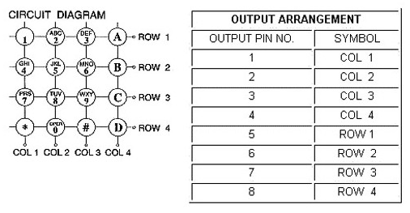

Episódio 13: Conhecendo a interrupção por mudança de estados em RB4 a RB7 no PIC16F628A
Neste episódio veremos como usar a interrupção por mudanças de estados nos pinos RB4 a RB7 para um exemplo prático. Esta interrupção é diferente da interrupção externa vista no episódio 12 pois a interrupção externa ocorre somente sobre a borda (subida ou descida) do sinal, enquanto que esta interrupção (mudança de estados) que veremos agora se dá por mudança de estados lógicos, tanto do estado de nivel alto para baixo quanto do nível baixo para alto, e pode-se ver a diferença pela Figura 13.1.
| Figura 13.1 - Bordas e estados lógicos de um sinal quadrado |
|---|
| Fonte: Próprio autor (2020) |
Ao trabalhar com a interrupção por mudança de estados, devem ter em mente que essa interrupção está associada aos pinos RB4 a RB7, não tendo como associar a um e a outro não. Assim, se ativar a interrupção por mudança de estados no registrador INTCON, assim qualquer mudança de estados em qualquer um dos pinos RB4 a RB7 chamará o tratamento da interrupção se o bit GIE estiver setado.
Logo, se alguma das portas RB4 a RB7 tiverem seu estado modificado, a interrupção é chamada e ela pode ser tratada de forma semelhante ao visto no episódio 12.
Aqui novamente faz-se uso dos registradores TRISB e INTCON para a interrupção externa, mudando apenas os bits a serem usados.
Assim, começamos com o registrador TRISB configurando os comportamentos (pino configurado como entrada ou saída) e o próximo registrador é o OPTION_REG com os bits RBPU no qual definirá se irá ou não ativar os resistores de pull-up dos pinos do PORTB e por ultimo o registrador INTCON com os bits RBIE e GIE, e o estado da interrupção está no bit RBIF.
Aqui veremos um exemplo do uso desta interrupção para captura de informações de um teclado, sem a necessidade de uso de um circuito específico para isso (por exemplo o circuito integrado 8279 da Intel - https://en.wikipedia.org/wiki/Intel_8279) como forma de reforçar o estudo das interrupções.
Na Figura 13.2 encontra-se o teclado utilizado em nossa aplicação e não Figura 13.3 à disposição dos pinos em relação às teclas. Essa disposição é importante na hora de gerar as conexões no microcontrolador PIC16F628A.
| Figura 13.2 - Teclado com 4 linha e 4 colunas |
|---|
| Fonte: https://www.tme.com/br/pt/details/kb1604-pnb/teclados-de-plastico/accord/ak-1604-n-bbw/ |
| Figura 13.3 - Disposição dos pinos do teclado |
|---|
|  |
| Fonte: https://www.tme.com/Document/8178bd3a27d554ae1be8fc41a776e7b8/ACCORD DIAGRAM-DTE.pdf |
A Figura 13.4 exibe o esquema das conexões dos componentes necessários ao funcionamento do nosso exemplo, sendo que o padrão de leitura segue a Tabela 13.1.
| Figura 13.4 - Disposição das conexões dos componentes |
|---|
| Fonte: Próprio autor (2021) |
| Tabela 13.1 - Relação do registrador PORTB e as teclas | |||||||||||||||||||||||||||||||||||||||||||||||||||||||||||||||||||||||||||||||||||||
|---|---|---|---|---|---|---|---|---|---|---|---|---|---|---|---|---|---|---|---|---|---|---|---|---|---|---|---|---|---|---|---|---|---|---|---|---|---|---|---|---|---|---|---|---|---|---|---|---|---|---|---|---|---|---|---|---|---|---|---|---|---|---|---|---|---|---|---|---|---|---|---|---|---|---|---|---|---|---|---|---|---|---|---|---|---|
|
|||||||||||||||||||||||||||||||||||||||||||||||||||||||||||||||||||||||||||||||||||||
| Fonte: Próprio autor (2020) |
| Figura 13.5 - Fluxograma da solução para controle de acesso por teclado |
|---|

|
| Fonte: Próprio autor (2021) |
Na Tabela 13.1 o nibble mais significativo está associado aos pinos RB4 a RB7 que são os pinos de entrada (input) que serão lidos para saber se está entrando o nível alto ao pressionar alguma tecla associada a coluna dada por eles. Já os pinos RB0 a RB3 serão pinos de saídas para “injetar” sinal alto nas devidas linhas e poder associar com as colunas relacionadas com os pinos RB4 a RB7.
A Figura 13.5 exibe o fluxograma da solução para esse exemplo no qual especifica a rotina principal e a rotina de interrupção. Nesta fgura pode-se ver que neste exemplo fazemos a limpeza do flag de estado da interrupção de mudança (RBIF) após todas as verificações, por causa de alguns delays que podem ocorrer no percurso do processo. Também há vários testes baseados nos valores da Tabela 13.1 para interpretar as teclas clicadas.
No Código 13.1 há a implementação da solução em assembly associado ao fluxograma da Figura 13.5 e do circuito da Figura 13.4.
| Código 13.1 - Implementação do exemplo de aplicação da int. de mudança de estados |
|---|
|
| Fonte: Autor 2021 |
O ponto forte no Código 13.1 está na ativação da interrupção pelos bits GIE e RBIE no registrador INTCON, na verificação que a interrupção gerada foi da mudança de estados, dada pelo bit RBIF do registrador INTCON. As outras linhas no Código 13.1 relacionam com a configuração do microcontrolador e também com a lógica usada para mapear o teclado e verificação de validação da senha.